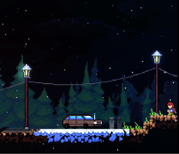

Prólogo
O prólogo é a primeira fase de celeste. É a fase mais fácil do jogo.
Mecânicas
Plot
Prólogo introduz 3 novas personagens:
• Madeline,
• Vovó,
• Pássaro.
O prólogo começa com Madeline mentalmente se encorajando a seguir com sua jornada. Seguindo, Madeline encontra um pássaro que ensina a ela como escalar. Após isso, Madeline encontra um mulher idosa com quem pede direções. A idosa debocha de Madeline e avisa sobre os perigos da montanha, mas Madeline a julga como maluca e continua com seu caminho. Logo em seguida, Madeline passsa por uma ponte que colapsa enquanto ela a atravessa, fazendo Madeline começar a cair. Porém, o pássaro ensina Madeline sobre o dash, salvando-a. Madeline chega no chão e se encoraja novamente, assim terminando a fase.
Diálogos
Na tela: É agora, Madeline.
Na tela: Respira.
Na tela: Por que está tão nervosa?
Madeline: Com licença, senhora.
Madeline: A placa lá fora está quebrada... Essa é a trilha da Montanha?
Vovó: Você está quase lá, bem. É só atravessar a ponte.
Madeline: Aliás, a senhora precisa ligar pra alguém pra ver a entrada. A passagem desmonorou e eu quase morri
Vovó (rindo): Se minha "entrada" quase te engoliu, a Montanha pode ser demais pra você.
Madeline: ...
Madeline: Bom, se uma velha coroca que nem você consegue sobreviver aqui, acho que vou ficar bem.
Vovó: À vontade.
Vovó: Mas fique você sabendo, a Montanha Celste é um lugar estranho.
Vovó: Talvez você veja coisas.
Vovó: Coisas que não está pronta para ver.
Madeline: Você devia se tratar, dona.
Na tela: Você consegue.
Cheat Mode
O Cheat Mode pode ser acessado do prólogo. Para desbloquear o Cheat Mode, é necessário, da sala inicial, seguir o caminho da esquerda. Dentro dessa sala, somente um carro é encontrado. Para ativar o Cheat Mode, é necessário fazer uma sequência de de comandos: Esquerda - Direita - Diário - Pegar - Cima - Cima - Baixo - Esquerda - Pegar - Confirmar. Após isso, o jogador voltará para a página inicial, com o acesso de todos os capítulos e o perfil do jogo ganhará um selo "Cheat Mode".
